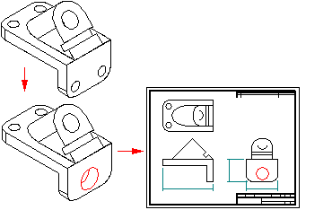

Drawing view updates
When you change parts and assemblies depicted in part views, you can easily update the views so they match the new model geometry. This works because part views are associative to the 3D part or assembly they were created from. For example, if you add a hole to a 3D part in the Part environment and then update the part view in the Draft environment, the hole geometry is added to the 2D drawing.

When a drawing view is out-of-date with respect to the 3D model, the software displays a solid border or box around it on the drawing sheet. To update the drawing view display as well as the retrieved dimensions, use the Update Views command.
Tools for checking drawing view out-of-date status
There are several tools that work together to identify drawing view out-of-date status conditions.
-
Drawing View Tracker
The Drawing View Tracker checks for both out-of-date geometry in part views and out-of-date model status in the document and provides specific instructions for what to do to update them. When you open a document with out-of-date part views, Drawing View Tracker displays a warning that the views need to be updated before dimensioning.
-
Assembly Configuration Changes Make Drawing Views Out-of-Date In This Draft File option
This option (on the General page of the Solid Edge Options dialog box) is an automatic check for display configuration changes for all assembly views in the draft document that have the Configuration Match option enabled. Display configurations store both the show/hide and the simplified/designed status of the parts in the assembly. When this option is set, changes to an assembly configuration associated with a drawing view will make the view out-of-date. All drawing views in the document are checked automatically.
-
Configuration Check
This option (on the Display page of the Properties dialog box for a selected drawing view) is a manual check for display configuration changes for the assembly shown in the currently selected drawing view.
-
Configuration Match
This option (on the Display page of the Properties dialog box for a selected drawing view) controls whether show/hide part settings in the drawing view match the show/hide settings within the assembly configuration. Views without this option set will not be out-of-date after changes are made to an assembly display configuration.
Using the Drawing View Tracker
The Drawing View Tracker provides specific information on updating both out-of-date part views and out-of-date models. While a view becomes out-of-date when the 3D model to which it is associative changes, a model becomes out-of-date when links external to the Draft environment change. Out-of-date model causes may include, but are not limited to:
-
A part file modified outside the context of its parent assembly file
-
Broken internal links in a part file
Out-of-date model conditions cannot be resolved inside the Draft environment. Because different circumstances can cause an out-of-date model condition, the Drawing View Tracker provides step-by-step instructions for updating out-of-date models in the current document. Solid Edge displays a solid border around an out-of-date view (A), a corner border around an out-of-date model (B), and both a solid border and a corner border when both out-of-date view and out-of-date model conditions apply (C).

Correcting an out-of-date model condition usually causes an out-of-date view condition.
Failed dimensions after updating part views
When you update a part view, a dimension may fail to update because the edge it referred to is no longer displayed in the part view. For example, if you deleted a hole feature in the part model, the edge representing the hole will be removed from the part view when you update it.
When a dimension fails to update, it changes to the "failed" or detached color. The color change helps you detect failed dimensions easily, so you can edit the drawing. All failed dimensions for a part view form a single selection set, in case you want to delete them all at once.
Reattaching dimensions
Sometimes you may want to reattach failed dimensions in a drawing. For example, if you delete one of several holes that comprise a single hole feature on a part, and the edge representing the hole was dimensioned on the drawing, the dimension will fail. Instead of deleting the dimension and placing a new dimension, you can drag and drop the dimension line handle point to one of the remaining hole edges on the part view. This saves time because any prefixes, tolerances, and other formatting on the failed dimension are applied to the new dimension. You can also drag and drop the dimension line handle point(s) to different parent object(s), even if they have not failed.
Tracking changed dimensions and annotations
Wherever possible, Solid Edge attempts to rebind dimensions and annotations that were detached after a drawing view update.
All changed dimensions and annotations, whether they have been repaired or not, are reported in the Dimension Tracker dialog box. To activate this dialog box, select the Tools→Dimensions→Track Dimension Changes command.
To learn more, see Tracking dimensions and annotations.
How do I
Track drawing viewsUpdate part views in a document
Update a drawing view after editing a part or assembly
Open the 3D document that a drawing view references
Undo drawing view changes
Look up more details
Drawing View Tracker commandDrawing View Tracker dialog box
View out-of-date
Model out-of-date
Update Views command
Update Command